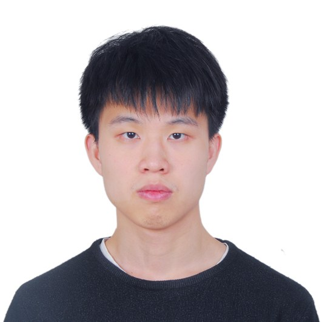
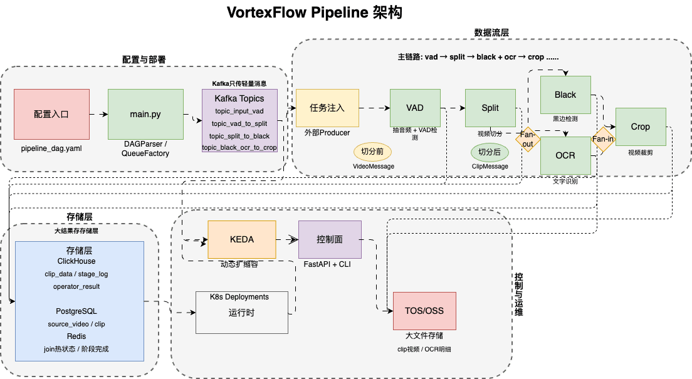
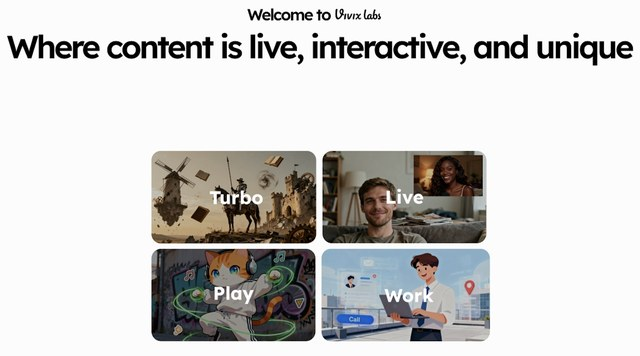
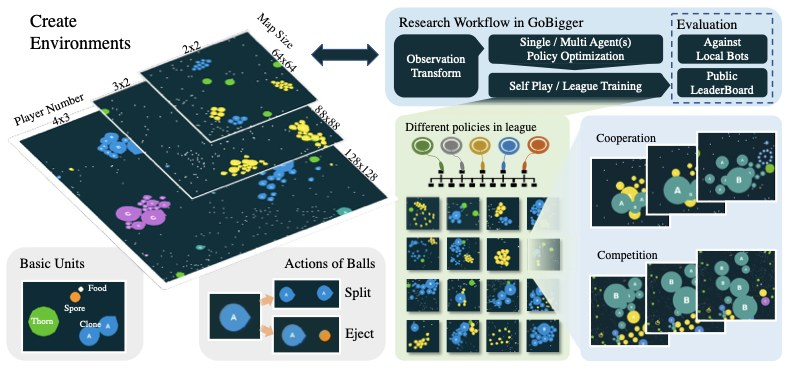
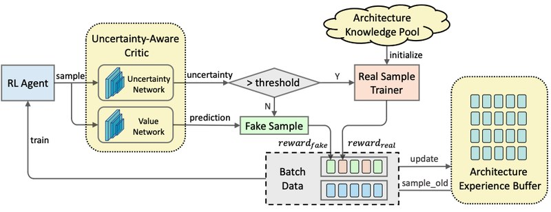
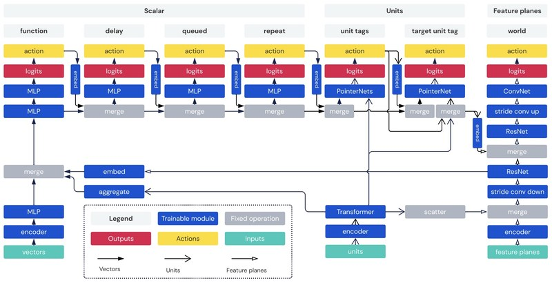
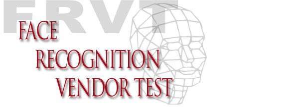

|
Ming Zhang
I'm an algorithm engineer at Vivix, where I lead the data workstream for our multimodal foundation model pretraining — from data flow design and framework architecture to operator development and deployment at production scale.
Previously I spent five years at SenseTime in Yu Liu's group, working across face recognition, reinforcement learning, neural architecture search, and image generation. I received my B.Eng. in Information Engineering and M.Eng. in Communication Engineering from Beijing University of Posts and Telecommunications. I joined Vivix in January 2025 as part of the founding team.
I'm most interested in the data infrastructure behind large-scale multimodal generative models — the systems that turn raw signal into training-ready inputs for foundation models. Feel free to email me for further details.
|

|
Selected Work
Over roughly six years my work has spanned face recognition, large-scale reinforcement learning, neural architecture search, and — for the last few years — the data infrastructure behind multimodal generative models. The common thread is systems and engineering at scale, always end-to-end from framework design down to individual operator implementations. Most projects listed here have shipped in commercial products or services; a subset is also open-sourced or published in academic venues.
Below they're grouped by area: (i) data infrastructure and pipelines that power today's generative model pretraining, (ii) reinforcement learning at scale from my earlier years at SenseTime, and (iii) face recognition engineering.
|
i. Data Infrastructure & Pipelines
|
|

|
VortexFlow — A Distributed Data Pipeline Framework for Multimodal Pretraining
Vivix · 2026.02 – Present · Data Lead
A DAG-declarative, distributed video data processing framework designed and built from scratch to sustain the data appetite of multimodal foundation model pretraining. VortexFlow schedules a long chain of pluggable operators (VAD, scene cut, black-bar and watermark detection, OCR, aesthetics, dedup, captioning, etc.) across a heterogeneous cluster, with hot-reloadable configuration, dynamic autoscaling, replay/backfill, and end-to-end checkpoint recovery. Under the hood it composes Kubernetes, Kafka, Redis, PostgreSQL, ClickHouse, and OSS, with results funneled into a ClickHouse wide table for downstream querying.
In production the pipeline sustains ~50M clips/day across roughly 100k CPU cores and 1000+ GPUs. Beyond the framework itself, a substantial share of the throughput comes from operator-level optimization work — restructuring internal implementations, introducing intra-operator parallelism, and re-architecting bottlenecks. I lead a team of three engineers and four interns on this system, and own the design from data-flow topology down to individual operator implementations.
|
|

|
Post-Training Data Pipelines for Video Generation (Tiptap & A2V)
Vivix · 2025
Vivix's early model portfolio spanned Tiptap — a trajectory-controlled video generation app (since discontinued) — and an A2V video generation model. I designed and built the end-to-end data processing and filtering pipelines that produced post-training data for both, tailored to each model's needs.
Each pipeline chained more than a dozen operators — scene splitting, black-bar / subtitle / watermark detection, OCR, motion analysis, shot-cut and continuity checks, aesthetic scoring, quality classifiers, near-duplicate detection, and multi-stage captioning — composed into a DAG with model-specific filtering rules layered on top. Getting the composition right was non-trivial: the same raw video had to be routed through different filter budgets, and captioned with different prompts depending on whether it was destined for the trajectory-control model or the A2V model. In production the pipelines processed on the order of tens of millions of clips on Kubernetes.
This was the project where a data-centric lens paid off most directly: careful decisions about which clips to keep, which signals to weight, and how to sequence filters translated into measurable gains in downstream generation quality — and shaped how I thought about the framework I would build next.
|
|
|
Miaohua — Product Engineering and Pretraining Data
SenseTime · 2022.10 – 2024.12
Miaohua is SenseTime's text-to-image product. I first worked on product implementation and inference deployment; once the product stabilized and was handed off to another team, I moved to its base-model pretraining data. Scaling to billion-level data was where I began to appreciate data-as-a-first-class-citizen: aesthetics operators, tagging pipelines, and the observation that data quality dominates model quality — a perspective that continues to shape my work at Vivix.
|
ii. Reinforcement Learning at Scale
Three projects sharing a common architectural spine — the large-scale learner–coordinator–actor pattern for distributed RL training. Across them I built end-to-end familiarity with this architecture at production scale. Beyond each project's own delivery, I contributed environments, RL algorithms, and system-level optimizations upstream to the OpenDILab ecosystem, so the shared infrastructure could be reused by the wider community.
|
|

|
GoBigger — A Scalable Multi-Agent Interactive Simulation Platform
SenseTime / OpenDILab · 2021.08 – 2022
GoBigger is an agar-like multi-agent game environment released as part of the OpenDILab open-source ecosystem (3.6k+ stars on the flagship DI-engine framework; 500+ on GoBigger itself), designed for research on cooperation and competition among learning agents. I designed and implemented the environment, built the accompanying benchmark, and led algorithmic work on multi-agent reinforcement learning within this setting.
On top of the environment I organized a large-scale multi-agent RL competition that attracted 1,000+ participants. Beyond GoBigger itself, I also contributed multi-agent RL algorithms and operator-level performance optimizations upstream to DI-engine.
code /
ICLR 2023 paper (first author)
|
|

|
RL-Based Neural Architecture Search
SenseTime · 2020.05 – 2021.08
Built an internal RL-based neural architecture search system end-to-end — supernet search space, learner, actor, and coordinator — along with cluster-side features (e.g. GPU preemption) tailored to the company's shared training infrastructure. The system reached SOTA on standard benchmarks with a ~10× speedup over baseline RL-based NAS, and was adopted by dozens of internal product lines to search architectures for their downstream models.
Associated publication:
FNAS: Uncertainty-Aware Fast Neural Architecture Search
(Liu, Zhang, Sun, Liu, Song, Liu, Li; arXiv 2021).
|
|

|
DI-star — Grandmaster-Level StarCraft II AI
SenseTime / OpenDILab · 2020 – 2021
DI-star is an open-source distributed training platform for StarCraft II agents (1.4k+ GitHub stars), whose trained models compete at grandmaster level and have publicly played against professional players. I owned the actor subsystem — environment inference, tensor transport optimization between actors and learners, and the parallel process-management layer that keeps thousands of concurrent rollouts stable.
code
|
iii. Face Recognition Engineering
|
|

|
NIST FRVT — Face Recognition Engineering
SenseTime · 2019.09 – 2020.04
My first project at SenseTime, as an intern joining Yu Liu's group. I worked on the engineering side of the team's NIST FRVT submission: inference-time acceleration of the face recognition model and the SDK that ran under the evaluation harness, meeting sub-second query latency at the gallery scale required by the benchmark. Our submission took first place in the FRVT face-recognition track.
|
Honors & Awards
Top-tier Annual Performance Rating (E) at SenseTime — awarded for three consecutive years (SenseTime's highest performance tier).
Gold Medal, Google Landmark Retrieval 2020 (Kaggle).
1st Place, Face Recognition Track, NIST FRVT (2019/2020).
|
|
2025.01 – Present
|
Vivix · Algorithm Engineer
Data infrastructure for multimodal foundation model pretraining. Founding team.
|
|
2019.09 – 2025.01
|
SenseTime · Algorithm Engineer (intern → full-time)
Yu Liu's group. Face recognition, reinforcement learning, neural architecture search, and image generation.
|
|
2018 – 2021
|
Beijing University of Posts and Telecommunications
M.Eng., Communication Engineering.
|
|
2014 – 2018
|
Beijing University of Posts and Telecommunications
B.Eng., Information Engineering.
|
|